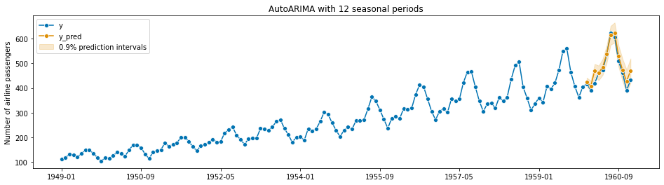
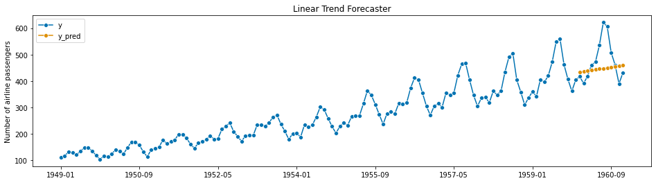

Who this is for?
People with no prior exposure to time series analysis, but may have taken a statistics class or two. Goal is to help you recognize what time series forecasting is and share examples of time series forecasting models used in practice today without using any math.
What is Time Series Forecasting?
Time Series is data that’s indexed by time. In finance, we encounter time series all the time - think of our stock price throughout the course of a week, or a revenue forecast, our historical weekly spending data, etc.
Time Series Forecasting aims to predict future periods based on available information, and because of the time-based nature of the data, people have had to create novel ways of analyzing and dealing with how the signal changes over time.
A (trivial) example scenario 🍕
Let’s say you’re a new FP&A analyst and you’re in charge of managing the budget for your finance team. One day your manager comes in and asks for your best guess as to what next month’s spending is going to be. The team’s been working really hard the last few months, so if you’re trending under budget then maybe the team can celebrate with an offsite pizza party. What approach would you take?
Tried and True Baselines
If you’ve been in Finance for any length of time, you’ll typically encounter two simple approaches to forecasting: asking experts and applying a simple rule of thumb in excel.
Judgmental Forecasts
Judgmental Forecasts are important to recognize because they’re everywhere within Finance. It’s forecasting based on human intuition and expert opinion - which has its flaws but can be useful. I won’t go into much detail on this since Decision Quality (DQ) and the field of decision analysis covers this in greater depth.
Shortcuts and ‘rules of thumb’ (heuristics)
More quantitative than judgmental forecasts, heuristics are shortcuts that rely on assumptions and/or simple math to create a forecast. This includes our common ‘Linearity’ models, simple moving averages, and even a back-of-the-envelope financial model you might build in excel where the inputs are ultimately based on human intuition and opinion. While these approaches can be very accurate, they’re often point forecasts and you might not be able to quantify how certain you are in that exact point forecast. In the case of an excel-based financial model, the reasons behind the human inputs are not implicit, resulting in a model that can make you overconfident in the actual forecast or in its ability to support good decision making if the underlying assumptions were flawed (aka garbage in, garbage out).
Can We Do Better?
In the example scenario, the stakes are low: if you get the forecast wrong, you lose out on a little pizza 🍕. But if the stakes are higher and you have a wealth of available data, can you get a faster, more accurate, and more informative forecast?
Advances in computing in the last 80 years have led to new methods in forecasting, starting from simple statistical methods from the 1950’s all the way to the new machine learning and neural network driven approaches of the last 20 years. I’ll highlight a few here:

Below, I’ll give a brief summary of what these are so you can identify when to use them and what they look like, with a heavier emphasis on the classical techniques and more of a high level mention of the rest. We’ll be applying these different forecasting methods against the count of monthly international air passengers from 1949-1960 from the classic Box-Jenkins ARIMA paper.
Classic Time Series Forecasts
Exponential Smoothing (Holt-Winters)
Exponential Smoothing (sometimes called the Holt-Winters model) is a family of fast, classic methods from the late 1950’s that can make reasonably good forecasts with a minimal amount of data and is very quick and simple to calculate.
It starts with ‘Simple’ exponential smoothing, which is like a weighted moving average. But the way that the data is weighted decays exponentially the further in the past that you go, so that more recent data is weighted much, much more than data from the distant past.
Here’s an example of a Simple Exponential Smoothing forecast:

Notice that in this case, we’ve modeled a 1-year monthly forecast (12 steps ahead), and simple exponential smoothing just results in a straight line. You can modify the Exponential Smoothing Model to incorporate a trend - essentially you add a slope to the line:

Which gets a slightly better fit. Now we notice that there are clear repetitive peaks and valleys in this signal starting around 1952 and onwards, indicating that there is higher travel from June-August of each year, corresponding with summer in the Northern hemisphere. Once again, Exponential Smoothing can incorporate both the increasing trend and this seasonal component:

This final model is also called Triple Exponential Smoothing, and is a great example of the power of time series models. You may have noticed that this model is a combination of three different things: the weighted moving average, the linear trend, and the seasonality. With the rest of the examples, you should think of each forecasting model as a combination of multiple underlying building blocks then you can decompose and tweak to get the best forecast possible.
What does it mean to have a ‘good’ forecast? A ‘good’ (accurate) model should closely approximate the curve of the actual/historical data during your testing, indicating that it’s a good fit for the data during your test. I’ll summarize model evaluation later, but if you’re interested you can read this summary here to get a preview.
Autoregressive Integrated Moving Average (ARIMA)
ARIMA stands for Autoregressive Integrated Moving Average, and similarly to Exponential Smoothing it performs very well on a small amount of data and is fast. It was state of the art for the 1970’s and still performs very well to this day. Traditionally, ARIMA also required the use of an analyst to use their business acumen to specify some of the parameters in this model, but more recently automated techniques made this less necessary.
AutoRegression What is “AutoRegression”? Think of it as another fancy weighted average, similar to what we saw with Simple Exponential Smoothing. Only this time, the weights aren’t necessarily decaying the further back in time you go - the weights are free to vary, and you use the math behind Linear Regression to calculate the weights based on the data.
Unlike Exponential Smoothing, ARIMA relies on statistical assumptions in the underlying data, and violation of these assumptions will result in a less predictive model. However, in terms of prediction accuracy you can often get a better fit with ARIMA.
Here’s an example of ARIMA on the Air Passengers set:

Note the implementation of the model I used here includes a 90% Prediction Interval. A Prediction Interval has a different interpretation than a traditional Confidence Interval - a prediction interval describes the probability of the future data point while a confidence interval describes how confident you should be of a true statistical parameter (i.e. the population mean) being contained within that interval. and depending on the model it might not make any assumptions about the underlying distribution of the data.
Time Series Regression
Regression in a time series context has some important considerations and differences than the classic Ordinary Least Squares (OLS) Linear Regression that you may have learned in a long-forgotten statistics class. In fact, some of the basic assumptions in Linear Regression are violated in the time series setting (depending on how you use it), but with careful use and some tweaks regression models have many applications in modern time series forecasting.
Linear Regression
You can turn any time series into a linear regression problem by using time as a feature or predictor in your model. For instance, you can simply fit a linear trendline (even in excel) to data by using linear regression to estimate the average response based on time:

And of course, if you have additional predictors or features you can add them to the model as well, similar to how you would do multiple linear regression. The benefit of using this kind of model is that you can incorporate additional information and other key drivers to improve the accuracy of the model and make it easier to explain the model to stakeholders and use it in decision making. The downside is that predictive accuracy on these models might not be as good as other time series methods, and the forecasts are highly dependent on your ability to identify good ‘key drivers’, which is challenging in practice.
Dynamic Regression (ARIMAX)
Dynamic Regression, to include ARIMA with eXogenous variables (exogenous means data that’s not part of the signal you’re trying to predict), is a way to combine the predictive accuracy of ARIMA with the explainability of your regression models. ARIMAX is a different kind of combination of models than you’ve seen - it’s actually a combination of two models that are calculated in a sequence.
Steps in ARIMAX:
- First, fit a linear regression model to a set of historical predictor variables/features
- Calculate the residuals, which is the difference between the model’s predictions and the historical actuals in the data
- Finally, fit an ARIMA model that best predicts the residuals
- To create a forecast, you feed in forecasted variables/features to the regression model, and then add in the fitted ARIMA model
The key thing to watch out for in ARIMAX (and all regression models) is the idea of leakage : when data that you wouldn’t have known in advance is used to build the model. So the forecast depends on getting a very good forecast of the features that you’re feeding into the model. And those forecasts might themselves be the result of another time series forecasting process that has its own uncertainty and prediction intervals, and these errors can cascade throughout your model in ways you might not expect.
Decision Trees
More specifically, tree-based methods like Random Forest and their most sophisticated variants like eXtreme Gradient Boosting (XGBoost). These are very popular in competition and tend to outperform more complex models on tabular data. Think of these as more flexible models that can fit hundreds of mini-regression models and adapt to nonlinearities, while still being relatively fast, and they should be a go-to model after first trying the classical statistical models.
However, due to the stochastic (random) nature of these models, you aren’t guaranteed to get the same results every time you run the model. But these models can handle non linearity in the data and can automatically find the best predictors/variables to include in the model and help you understand what’s happening under the hood.
Advanced Methods
I won’t cover these in much depth, but are still worth a mention:
Prophet
Facebook open sourced their ‘Prophet’ model, which is intended to be an automated, scalable forecasting model that is suitable for a business analyst to run.

You can think of Prophet as a fancy combination of several underlying components:
- A piece-wise linear trend component (meaning it partitions the data into multiple periods and fits a different line to each period)
- Any seasonal patterns (including any combination of daily, monthly, yearly, weekly, and custom patterns)
- Holiday effects
While Prophet is state of the art for situations in which you have a lot of daily data (i.e. user activity on a website), in the context of corporate finance where data comes in on a weekly, monthly, or quarterly basis, Prophet does not perform very well.
Vector Autoregression
Vector Autoregression is an example of a multivariate model in which you have multiple parallel time series and you want to simultaneously forecast for them. Or, you want to understand how each of the variables and time series influence each other.
Neural Networks
Neural networks have made a tremendous splash in computer vision and language modeling, and within time series data they can be used for vast quantities of data. The key with neural networks is their ability to handle nonlinear relationships, but they require a large amount of data in order to be useful. In practice, corporate finance deals with smaller quantities of tabular data (i.e. data that looks like it came out of table in a spreadsheet) where simpler methods still perform well.
Lots of Models!
So in our short time together we’ve only scratched the surface - there are a bounty of models and novel approaches out there, including judgmental forecasts and rules of thumb that we use today. How do we compare them all?
How do we know what ‘Better’ looks like?
In other words, how do you measure and evaluate model performance? Turns out that’s a question without a straightforward answer, and it’s up to you as the analyst to interpret the results and arrive at a reasonable conclusion. In a future post I’ll discuss the most common ways of measuring forecast performance and talk about the pitfalls and benefits of each approach.
Further Reference
If you want to learn more, the best introductory resource I can point you towards is Hyndman’s free online textbook Forecasting: Principles and Practice, now in its 3rd edition
If you prefer an intermediate resource with Python examples, I highly recommend Practical Time Series Analysis by Aileen Nielsen